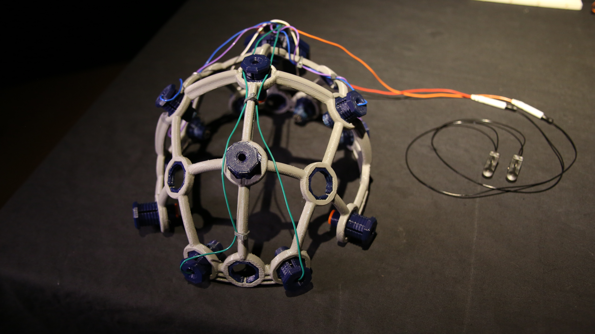
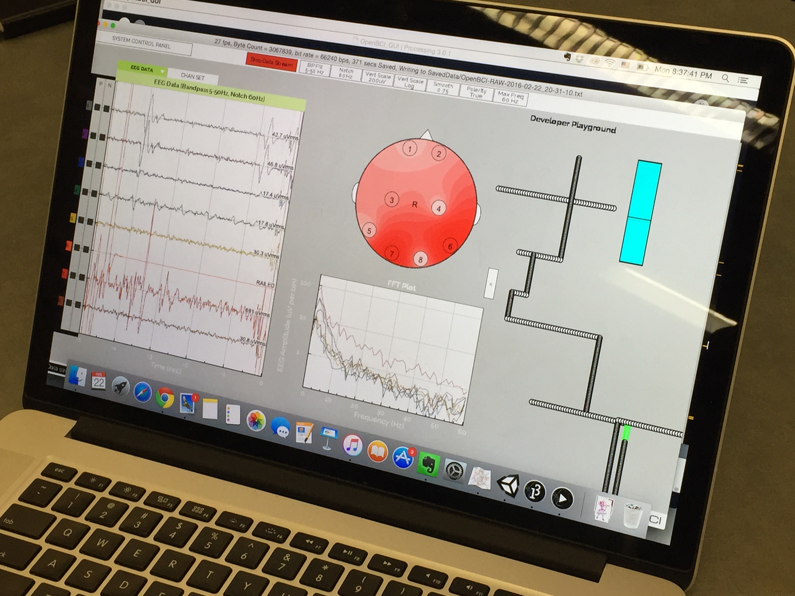

Dark Maze
BCI, Physical computing, Programming
Tools Used : Arduino, openBCI, Processing
In collaboration with Jordan Frand, Christina Choi and Wangshu Sun.
A tilt maze controlled by the users EEG and EMG signals.

This project was an exploration of using the openBCI kit to create meaningful interactions.
The openBCI software and hardware has the potential to measure EEG, EMG and ECG waves from the human body. We used this information to control a tilt maze. EMG signals from blinking controlled tilting the maze left and right. Accelerometer information from titling the head forward and backward controlled tilting the maze front and back. Entering a focused state of mind triggered high amplitude alpha waves which would turn on the lights in the maze.
Players need to focus to see the maze and also use their memory to remember the path when they are navigating the maze.
We made the prototype for the maze in Unity and controlled it with the modified openBCI script that pulled the required signals. We playtested this prototype at the NeuroTechNYC Meetup. During the session, players expressed interest to draw using our openBCI script, so we tried that as well. Here is a video from the session.
After user testing, we started building our physical maze and controlling motors to tilt the maze with the signals from the openBCI hardware.

← Back to Home